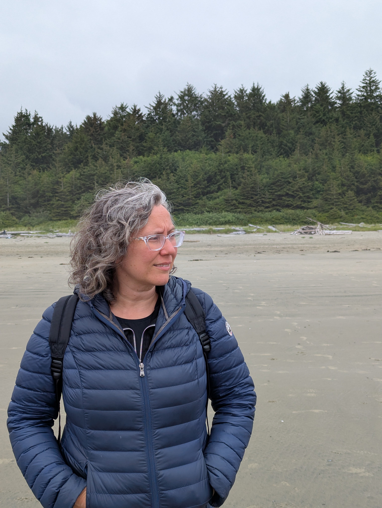

Àrees d'especialització

Ansietat i estrès
De vegades la ment no s’atura: apareixen preocupacions constants, sensació de tensió o la dificultat de poder descansar realment. Potser et sents desbordada, amb el cos en alerta o amb la sensació que tot costa més del que hauria.
En teràpia podem explorar què està passant, comprendre millor d’on ve aquest malestar i trobar maneres més amables de relacionar-te amb el que sents.
Autoestima i creixement personal
Hi ha moments en què la mirada cap a nosaltres molt exigent o crítica. Pot aparèixer la sensació de no ser suficient, de dubtar constantment o de sentir inseguretat davant de decisions o relacions.
El procés terapèutic pot ajudar a comprendre d’on neixen aquestes formes d’exigència i a construir una relació més respectuosa i amable amb un mateix.
Processos vitals i moments de canvi
La vida està plena de moments de canvi: decisions importants, etapes que s’acaben, situacions inesperades o moments en què alguna cosa dins nostre demana ser revisada.
La teràpia pot ser un espai per aturar-se, comprendre millor el moment que estàs vivint i trobar una manera més conscient d’acompanyar el teu propi procés.
Orientació psicològica
En ocasions no sabem ben bé què ens passa, però sentim que alguna cosa no està bé o que necessitem parar i reflexionar.
L’orientació psicològica ofereix un espai per ordenar pensaments, prendre perspectiva i trobar noves maneres d’afrontar les situacions personals.
Psicoteràpia individual
La psicoteràpia és un procés d’acompanyament en el qual explorar amb més profunditat les pròpies emocions, pensaments i experiències.
A través del diàleg i la reflexió conjunta es pot comprendre millor què ens passa i construir noves formes de relacionar-nos amb nosaltres mateixes i amb els altres.